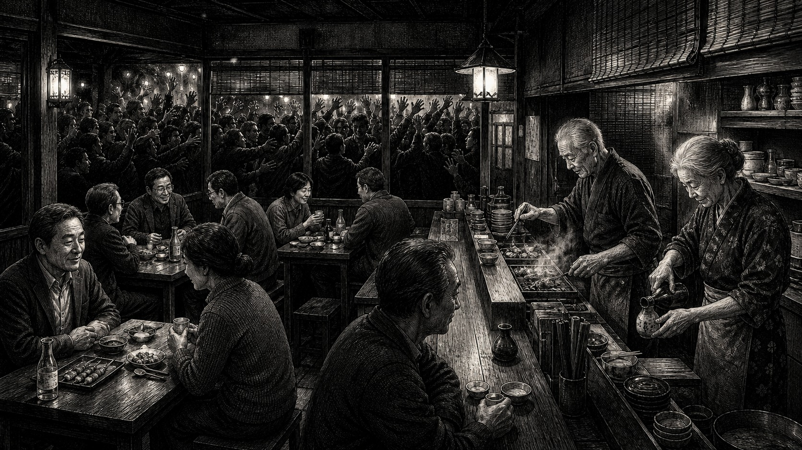

100人集める前に、3人を満足させられますか？

どーも、とーるです。僕が昔からお世話になっている、夫婦二人でやっている老舗の居酒屋があります。
昔ながらの小さなお店で、テーブルが3つ。カウンターが10席くらい。お客さんの7〜8割は常連さんです。残り2〜3割くらいが新規のお客さん。
新規で来た人が、次は友達を連れてくる。その友達がまた来る。そんな感じで、派手じゃないけど、ずっとお客さんが増えていく店です。
平日はもちろん、日によってバラつきがあります。たまに店主から、「今日、人全然いないよー」とLINEが来る。
すると、「じゃあ飲みに行くか」と常連客が集まる（笑）土日なんて、普通に満席です。予約の電話もずっと入っています。そんな店なので、営業電話も結構来ます。「集客のお手伝いをしませんか？」「広告を出しませんか？」みたいなもの。テレビ取材の話が来ることもあります。
でも、ほとんど断っています。最初聞いたとき、僕も、「もったいなくない？」と思いました。テレビですよ。出たら一気に認知されるかもしれない。新規客も増える。売上も上がる。普通なら、「ぜひお願いします！」ってなりそうじゃないですか。
でも、断る理由を聞いたら、なるほどなと思いました。「変にお客さんが増えたら、常連さんが入れなくなるから。」
なんです。
認知が増えればいい。客が増えればいい。……本当に？
例えば、その店がテレビで紹介されたとします。翌週。店の前に行列。今まで15人くらいを相手にしていた店へ、突然50人、100人が来る。
一見、大成功ですよね。売上も上がる。写真を撮って、「本日も満席ありがとうございます！」とInstagramへ載せられる。でも、店の中ではどうでしょう。注文が一気に入る。料理が追いつかない。「まだですか？」と言われる。
いつもなら常連さんと、「最近どう？」なんて話していた店主も、そんな余裕ありません。厨房から、「はい！ちょっと待ってね！」奥さんも、いつもならニコニコ話しているのに、今日は必死。料理を運んで、お酒を作って、会計して、電話が鳴る。
新しいお客さんからすれば、そんな事情は知りません。Googleの口コミに、★2「料理が出てくるのが遅かった。」★3「テレビで見て期待したけど、思ったより普通。」★2「接客がちょっとそっけなかった。」と書かれる。常連さんからしたら、「いや、あの夫婦めちゃくちゃいい人なんだけどな」なんです。料理も変わっていない。店主の性格も変わっていない。店も変わっていない。
ただ、店の受け入れLevelを超えるお客さんが、一気に来ただけ。なんです。
バズれば成功、じゃない
これ、SNS起業でもめちゃくちゃあると思っています。「もっと認知を取りましょう」「リールをバズらせましょう」「フォロワーを増やしましょう」「広告を出しましょう」もちろん、お客さんが来なきゃ売上は増えません。でも、その前に、来たお客さん、ちゃんと受け止められますか？という話です。
普段、DMが1日2件。ある日バズって、100件来た。返信できない。誰に何を返したか分からない。申込みが20件入った。決済後の案内が追いつかない。質問が来る。個別対応する。Zoomが増える。納品もある。
気づいたら、朝から晩までスマホ。「売上は上がったんですけど、もうしんどくて……」となる。そりゃそうです。集客だけLevel50になって、運営はLevel5のままなんです。
客数って、ある意味あなたのLevelを表しています
僕は、お客さんが少ない時期って、全部悪いとは思っていません。もちろん、永遠に0人でいいよ、って話じゃないですよ（笑）でも、3人なら、3人だからできることがあります。一人ひとり話を聞ける。どこで困ったのか聞ける。「ここ分かりにくかった」が分かる。商品を修正できる。失敗しても、まだ直せる。
3人をちゃんと満足させられた。じゃあ次は5人。5人できた。じゃあ、10人。10人になると、ちょっと忙しくなってくる。そこで、案内をテンプレ化する。LINEを整える。予約方法を変える。動画を作る。
少しずつ、自分が受け止められる客数を増やしていく。これが本来、事業が成長するということだと思っています。ところがSNSでは、Level3のときから、「100人集める方法」ばかり勉強する。まだ3人も満足させたことがないのに、いきなり100人集客しようとする。集める方法だけ覚える。
これ、飲食店でいうなら、厨房は一人。席は15席。オペレーションも作っていない。なのに、テレビCMだけ打つようなものです。怖くないですか（笑）
成り上がり勇者が、いきなり最強の剣を持つ
ゲームでも同じです。まだ、最初の村。勇者Level3。スライム倒してます。そこへ、「はい、最強の剣。」攻撃力999。おお。強い。でも、装備条件Level50。持てません（笑）仮に持てたとしても、そのままラスボス城へ放り込まれたら死にます。
剣が強くなっただけで、勇者本人のHPまで増えたわけじゃありません。これ、SNSでも同じです。広告。バズ。自動化。LINE構築。アプリ。高額コンサル。全部、使える人が使えば、めちゃくちゃ強い武器です。
でも、武器を手に入れたから、自分のLevelまで勝手に上がるわけじゃない。ここを逆に考えている人が、意外と多いなと思っています。
「先行投資です」は万能呪文じゃない
起業すると、よく聞く言葉があります。「先行投資。」僕も、先行投資は必要だと思っています。設備。広告。外注。ツール。システム。勉強。先にお金を使わないと、進まないことなんて普通にあります。
でも、お金を出したら全部「投資」になるわけじゃありません。例えば、手元に30万円。来月の生活費もそこから出す。商品はまだ売れていない。集客経路もない。それで、30万円の講座を買う。「これは先行投資だから！」うーん。僕なら、投資というより博打に近いと思います。
投資って、出す金額だけの話じゃないんです。そのお金を使って、何が変わるのか。どう使うのか。どこで回収するのか。そこにある程度、道筋が見えている。だから投資になる。「これ買ったら人生変わるかも！」だけで、生活費まで突っ込む。株でそれやったら、普通に止められます（笑）
僕も、LINE構築やアプリ開発は安くありません
僕自身、LINE構築やアプリ開発は、それなりの価格をいただいています。なので、「全員アプリ作りましょう！」なんて全然思っていません。むしろ、僕の中では、その金額を事業として回収できる見込みがある人向けという感覚です。
すでに商品がある。お客さんもいる。手作業の導線もある。でも、人数が増えてきた。管理が大変になってきた。取りこぼしがある。自動化したら時間が空く。アプリにすることで、顧客への価値提供も増やせる。こういう人なら、数十万円かけて仕組みを作っても、「これなら回収できそう」が見えます。最強の剣を渡したら、ちゃんと使える人です。
でも、起業したばかり。商品も決まっていない。お客さんもいない。導線もない。何を売るかも分からない。この状態で、高額なシステムを作っても、使う場所がありません。伝説の剣を買ったけど、まだ最初の村から出てない。みたいになります。だったら、まず木の棒でスライム倒しましょう（笑）
「100万円持っている」と「100万円払える」は違う
高額講座もそうです。100万円の講座がある。銀行口座には、100万円ある。じゃあ、あなたは100万円を払える人でしょうか。僕は、必ずしもそう思いません。100万円持っている人と、100万円の商品を使いこなせるLevelの人は別です。
例えば、免許取り立ての大学生。バイトもしていない。でも、親からもらったお金が500万円ある。500万円の高級車。買えます。免許もある。乗れます。でも、そのあとどうするんでしょう。保険。駐車場。税金。ガソリン。車検。タイヤ。修理。車って、買ったら終了じゃありません。維持があります。
ビジネスの商品も、結構似ています。買える。使える。活用できる。回収できる。全部、ちょっと違います。カード枠が100万円あるから、「100万円払えます！」も、僕の中では少し違います。それ、カード会社が「一旦100万円立て替えてあげるよ」と言ってるだけです（笑）
高額だから悪い、という話じゃない
100万円の商品に、100万円以上の価値があることなんて普通にあります。僕も金額の大きいサービスを扱います。だから、「高額商品は悪い」という話をしたいわけじゃありません。問題は、その商品と、自分の現在地が合っているか。です。
Level50の人が、Level50用の武器を買う。普通です。でも、Level3の人が、「100万円払えばLevel50になれるらしい！」と全財産を持っていく。ここは危ない。売る側にも、僕は同じことを思います。「本気なら借金してでも来てください」「払えないという思考を外しましょう」「高額だから覚悟が決まるんです」
いや、その人、その商品を使える状態なんですか？と思います。売った瞬間、売り手の売上は上がります。でも、買った人が使いこなせない。回収できない。焦る。結果、また別の高額商品へ行く。それで、本当に事業が育っているのでしょうか。
老舗の居酒屋がテレビ取材を断る理由
ここで、最初のお店に戻ります。その居酒屋は、別に新規客を拒否しているわけじゃない。新しい人も来ます。その人が、友達を連れてきます。さらにその友達が、また別の人を連れてくる。少しずつ、新しいお客さんが増えていきます。でも、7〜8割くらいは常連さん。そこを崩さない。
テレビに出て、一気に100人へ知ってもらうことよりも、今来てくれている人が「また来よう」と思える店でいる。そして、その人が誰かを連れてくる。これ、めちゃくちゃ強い集客だと思うんです。広告費0円。毎日リールを作るわけでもない。フォロワー数を競うわけでもない。でも、土日は満席。予約の電話は入る。平日に人が少なければ、「今日暇だよー」で常連さんが来る（笑）すごいですよね。
集客って、本当は自分だけでするものじゃない
SNSをやっていると、集客というと、自分で人を集めることばかり考えます。毎日投稿。リール。ストーリーズ。広告。ライブ。企画。ずっと、自分が集め続ける。でも、事業が育ってくると、少しずつ変わります。満足したお客さんが、口コミを書く。友達へ話す。SNSで紹介する。「あの人いいよ」と誰かへ伝える。つまり、お客さん自身が、次のお客さんを連れてきてくれる。
先ほどの居酒屋は、まさにこれです。無理に1000人へ認知を広げなくても、今いる100人が、少しずつ次の人へ広げてくれる。だから、店側も壊れない。常連さんも入れる。新規客も少しずつ増える。そして、その新規客がまた常連になる。派手じゃありません。でも、強いです。
僕が「自力集客からの卒業」と書いた理由
実は、こういう話は、僕が書いた電子書籍、『自力集客からの卒業』にもつながっています。集客というと、どうしても、「どうやってもっと多くの人に見てもらうか」に意識が向きます。もちろん、最初は自分で集める必要があります。誰にも知られていないのに、口コミだけ待っていても、たぶん誰も来ません（笑）
でも、ずっと自分一人で、毎月100人、200人、300人と集め続ける。これって、かなり疲れます。だから、ある段階から、今いる顧客が、次の顧客との接点を作ってくれる状態へ変えていく。僕の書籍では、そんなUGCや顧客を起点にした集客について書いています。最初の居酒屋みたいに、「もっと客を！」「もっと認知を！」と一気に増やすんじゃなく、今いる人を満足させる。また来てもらう。誰かに話したくなる店になる。その結果、新しい人が入ってくる。
僕は、SNS起業でもこの順番がすごく大事だと思っています。
まず、3人を満足させる
100人集める方法を探す前に、今いる3人を、ちゃんと満足させられているでしょうか。3人できたら5人。5人できたら10人。10人で回らなくなったら、仕組みを作る。そこで、LINE構築でもいい。アプリでもいい。外注でもいい。広告でもいい。必要になった武器を、必要になったタイミングで持つ。最初から全部そろえる必要なんてありません。RPGでも、最初の村で、ラスボス用装備一式をローンで買いません（笑）
客数も。システムも。投資額も。商品価格も。大きければ大きいほど、すごいわけじゃありません。
そこから考えてみてください。テレビ取材を断っても、週末は満席。常連さんが、次のお客さんを連れてくる。そんな商売もあります。最強の剣を探す前に、まず、目の前のお客さんへ、温かい料理をちゃんと出せる店にする。僕は、その順番の方が、長く続くと思っています。
とーる｜猫好きの行動経済アナリスト